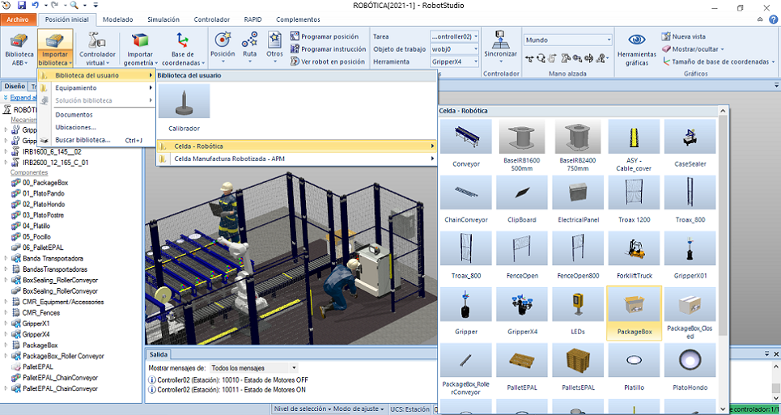

El proyecto final de la asignatura tiene como propósito general hacer uso del software ABB ROBOTSTUDIO para la programación y simulación de una celda robótica integrando los conceptos trabajados en clase de laboratorio y aplicando las herramientas de software con el objetivo de automatizar el proceso industrial asignado a cada equipo de trabajo.
OBJETIVOS
• Aplicar de forma práctica los conceptos sobre manipuladores seriales adquiridos durante el curso de robótica.
• Utilizar Robot Studio como herramienta para el control y diseño de procesos con robots industriales.
• Diseño de rutinas y trayectorias necesarias para la realización de un proyecto de soldadura industrial.
• Integración de mecanismos, componentes inteligentes y otros elementos de celda en aplicaciones robóticas industriales.
• Manejo de interfaces de usuario para el control y supervisión de procesos industriales.
DESCRIPCIÓN DEL PROYECTO
En los proyectos E1 y E2, se van a empacar vajillas de loza o plásticas, no desechables, en cajas de cartón, para su posterior distribución.
La celda tiene tres o cuatros bandas de alimentación de platos y pocillos y una de cajas de cartón, un robot toma los platos y pocillos y los
coloca en sus puestos dentro de la caja. Completada la vajilla, otro robot toma las cajas y las va paletizando en una estiva. Diseñar la caja
y su interior.
Proyecto E1: Vajilla de 4 puestos: plato hondo, plato pando, plato de postre, platillo y pocillo para café.
El proyecto final de la asignatura tiene como propósito general hacer uso del software ABB ROBOTSTUDIO para la programación y simulación de una celda robótica integrando los conceptos trabajados en clase de laboratorio y aplicando las herramientas de software con el objetivo de automatizar el proceso industrial asignado a cada equipo de trabajo.
SELECCIÓN DEL ROBOT (MARCA Y REFERENCIA)
La tarea de diseño y simulación de la celda se realizará por medio del entorno de RobotStudio de ABB, el cuál incluye en sus bibliotecas
predeterminadas los modelos de una amplia gamma de robots industriales, razón por
la cuál partimos de elegir a ABB como nuestro proveedor, la cual a su vez es una empresa especializada
con una basta experiencia en el campo de la robótica, automatización, equipamientos industriales y otras tecnologías de ingeniería.
Considerando la alta oferta en robots industriales que brinda este proveedor, ABB dispone de una herramienta de selección denominada Robot selector
desde su página web (o ingresando aquí) la cuál permite filtrar
los diferentes modelos empleando como principales criterios de selección: la aplicación, la carga útil y el alcance máximo.
SELECCIÓN DE LA HERRAMIENTA
En los proyectos E1 y E2, se van a empacar vajillas de loza o plásticas, no desechables, en cajas de cartón, para su posterior distribución.
La celda tiene tres o cuatros bandas de alimentación de platos y pocillos y una de cajas de cartón, un robot toma los platos y pocillos y los
coloca en sus puestos dentro de la caja. Completada la vajilla, otro robot toma las cajas y las va paletizando en una estiva. Diseñar la caja
y su interior.
Proyecto E1: Vajilla de 4 puestos: plato hondo, plato pando, plato de postre, platillo y pocillo para café.
Completa los siguientes datos
HOLA MUNDO
En ésta sección se incluyen los enlaces de descarga para todos los archivos generados en el desarrollo de la celda robótica conforme se solicitan entre los entregables requeridos en el enunciado del proyecto final. Los enlaces presentados correspondes a los archivos cargados en el repositorio de GitHub, el cuál también es accesible ingresando aquí.
PACK AND GO
Para poder compartir la celda completa junto con todos los archivos dependientes del proyecto, se crea un paquete de la estación activa que incluye los controladores virtuales, las bibliotecas y demás medios adicionales en un único archivo Pack and Go, en formato.RSPAG. Esta caracterítica de RobotStudio® permite empaquetar el proyecto para compartirlo con otras personas sin omitir ningún posible archivo necesario para su correcta ejecución.

BIBLIOTECAS DE ROBOTSTUDIO
Para los elementos que componen la celda de trabajo, se utilizaron múltiples modelos CAD de uso gratuito disponibles en diferentes repositorios web y en formato compatible para su edición desde Autodesk Inventor®. Estos diseños se modificaron acorde a los requerimientos de nuestro proyecto y se guardaron en un formato .SAT para ser importados como geometría desde RobotStudio®. Finalmente, se guardaron como biblioteca en formato .RSLIB para su posterior uso en la contrucción de la celda robótica.

ARCHIVOS DE PROGRAMA RAPID
Para el código generado por medio de RAPID en entorno de RobotStudio®...
Insertar imágen de RAPID en RS
El trabajo presentado corresponde al proyecto final para la asignatura de Robótica a cargo del Departamento de Ingeniería Mecánica y Mecatrónica de la Universidad Nacional de Colombia para el primer semestre del año 2021. El equipo de trabajo se encuentra conformado por tres estudiantes del pregrado de ingeniería mecatrónica.
INTEGRANTES DEL EQUIPO
|
|
|
|